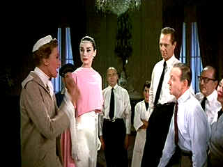

| Funny
Face/B,C |
| Paramount/1957/103/ANA 1.85 |
DVD is getting a mini-explosion of Audrey Hepburn and it's a pleasure
to enjoy the waif-like innocent charms of the lovely lady. Funny Face, Hepburn's first
musical comedy pairs Audrey with aging dance and song leading man Fred Astaire, and happily, the
magic is still alive.
 |
| Kay Thompson revs up the
fashion engine. ©Paramount |
Shop girl in bookstore is discovered by high fashion photographer on a
shoot and he transforms the bookish girl into a fashion butterfly. It may sound like a
transformation story a la Pygmalion, but it's more one elaborate, glamorous photo shoot than
anything else. Dick Avery is Quality Magazine's star photographer and when he and the crew led by
Editor Maggie Prescott invade a Greenwich Village bookstore for an impromptu fashion spread, he
notices more than the books. Contrast the dumb posturing of the Quality model with the fresh
innocent allure of Jo Stockton and Avery is inspired to make her "The Quality Woman."
That means cast and crew take their cameras to Paris, amen, to create a line of clothing for the
magazine's new signature lady. At first a reluctant model, Stockton jumps at the opportunity to
seek out her philosopher guru Emile Flostre at his favorite Paris hangout.
Paris is introduced with one of the two best production numbers in
Funny Face, "Bonjour, Paris!" Director Stanley Donen uses split screen techniques to
enhance the production number as Hepburn, Astaire and Kay Thompson revel in the sights of the city
of lights. Avery proceeds to set up more photo op glamour fashion shoots with Hepburn and the city
than you can stuff in a crocque-monsieur. There are some entertaining dance song and dance numbers
to alleviate the numbing excessiveness of the fashion world. Astaire is effective in an
out-of-place matador number and Hepburn maximizes use of her angular shape for some art house
bohemian dance expressiveness. Early on Kay Thompson inspires her Quality magazine staff to
"Think Pink" in her New York offices.
Ray June's Technicolor photography captures the grand flair of the glitzy
magazine world with appealing saturation. Donen keeps the dances and songs flowing with little
attempt at more than a paste-up story. The choreography is never rises to some of Astaire's classic
inspirations in other efforts, but Funny Face is easy to watch.
Too bad about the transfer. Edge enhancement is so prevalent it's got the
hot cartoon colors bleeding off the images. Some of the process shots are cranked to the extent
that people actually have halos. There's a dreamy wedding sequence that comes off far too hazy for
its own good. The colors are often astonishingly brilliant. There's some dirt here and there. Funny
Face would no doubt benefit from restoration work, but then, so would I. The music and
dialogue is delivered either Dolby Digital 5:1 or through the original clean mono tracks.
|
|
|
|

Selections from the Feature Archive
include articles on Akira Kurosawa, Frank
Darabont, Blonde Bimbos, Hollywood Street Gangs, or Vietnam: The
Hollywood Pariah, and many more....
Puttin on the
Ritz

Fred Astaire and Cyd Charisse bring Silk Stockings to life, a remake of Ninotchka, one of many
films successfully turned into musicals by the Hollywood dream factory. Read all about remakes into
musicals by clicking on the divine dancers.

Fred and Ginger tapped their way into the hearts of movie fans everywhere. Stu Kobak takes a look at some of those
dance movies that gifted audiences toe-tapping pleasure. Click on the image to get in on the beat.

 Have you visited Home Theater
Talk lately? One of the friendliest places on the Net for Home Theater and DVD discussion, you
can get help for installation problems or simply share your opinions with other Vidiots. Have you visited Home Theater
Talk lately? One of the friendliest places on the Net for Home Theater and DVD discussion, you
can get help for installation problems or simply share your opinions with other Vidiots.
. The online site for Film Comment Magazine
includes all the information you need to know about cinematic events sponsored by the Film Society
of Lincoln Center. The online site for Film Comment Magazine
includes all the information you need to know about cinematic events sponsored by the Film Society
of Lincoln Center.
MRQE
Find reams of movie and DVD reviews at the Movie Review
Query Engine, a index of reviews appearing on the Internet.

Take a look at the merry images of America's gift to
the movies: Hollywood Musical Posters are featured from The Movie
Poster Archive.
|